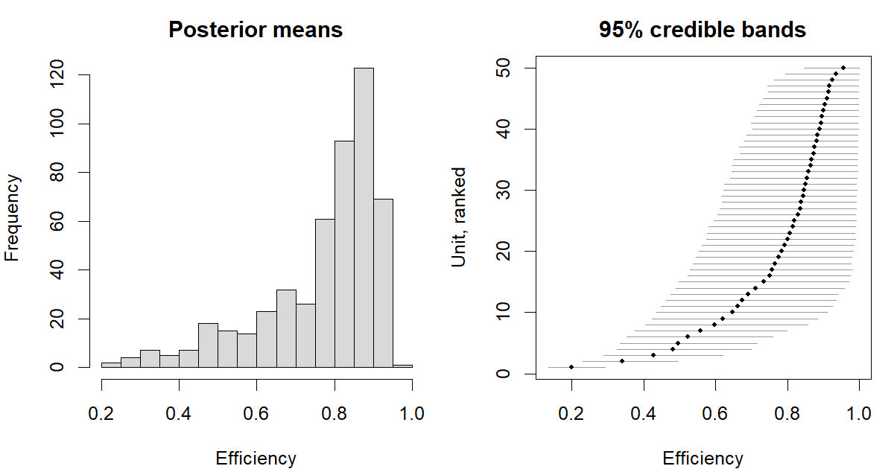

Bayesian inference of stochastic frontier models in R.
The package implements Gibbs samplers with data augmentation for composed-error frontier models in the tradition of van den Broeck, Koop, Osiewalski and Steel (1994). Because the one-sided inefficiency term is sampled as a latent variable rather than integrated out, efficiency scores come out of the sampler as draws. efficiency() therefore reports genuine posterior distributions, where maximum likelihood has to fall back on the Jondrow et al. (1982) conditional mean — a point predictor of an unobserved quantity, with no comparable measure of uncertainty attached.
At the time of writing there is no maintained general-purpose Bayesian stochastic frontier package on CRAN. sfaR, sfa, frontier, semsfa and ssfa are all maximum likelihood.
Usage
A model is built up step by step, in the manner of bvartools: a constructor fixes the data and the specification, and the add_* functions attach the remaining blocks and then the posterior draws.
library(bsfa)
set.seed(1234)
d <- sim_sf(n = 500, beta = c(1, 0.5, 0.3), sigma_v = 0.2, par_u = 4)
model <- create_sfmodel_exp(y ~ x1 + x2, data = d,
iterations = 5000, burnin = 2000)
model <- add_priors(model)
model <- add_initial_values(model)
model <- add_seed(model, 1234)
model <- add_posterior_coefficients(model)
model <- add_posterior_loglik(model)
summary(model)
#> Bayesian stochastic frontier model
#>
#> Call:
#> create_sfmodel_exp(formula = y ~ x1 + x2, data = d, iterations = 5000,
#> burnin = 2000)
#>
#> Frontier: production
#> Inefficiency: exponential
#> Observations: 500
#> Units: 500
#> Draws: 5000 after 2000 burn-in, thinning 1
#>
#> Posterior summary, 95% credible bands:
#> mean sd 2.5% median 97.5% ESS
#> (Intercept) 1.0460 0.0210 1.0041 1.0467 1.0861 290
#> x1 0.5087 0.0128 0.4826 0.5087 0.5340 1304
#> x2 0.2889 0.0136 0.2616 0.2888 0.3165 1438
#> sigma_v 0.1876 0.0148 0.1613 0.1867 0.2186 296
#> lambda 3.3359 0.2644 2.8624 3.3156 3.8956 328
#>
#> Posterior mean efficiency, per observation:
#> mean min median max
#> 0.7681 0.1995 0.8229 0.9549The data were simulated with , and . The slopes come back sharply; the intercept is the loose one, because it has to be separated from the mean of the one-sided term using only the asymmetry of the residuals.
The draws are attached to the same object rather than returned as a separate result, and are stored as coda objects, one block per parameter. Printing the model reports which blocks have been set, which is worth a glance before committing to a long run.
Before reading any of it, ask whether the sample supports a one-sided term at all. A production frontier skews the residuals to the left; if they are not skewed, there is no inefficiency in the data to estimate.
skewness_test(model)
#> Skewness of the least squares residuals
#>
#> Frontier: production (implies negative skewness)
#> Observations: 500
#>
#> skewness -0.9514
#> M3T statistic -4.8507
#> p-value 0
#> standard error from 299 resamples of the observations
#>
#> The residuals are skewed as the frontier implies, so the sample carries
#> information about the one-sided term and the efficiency scores are
#> estimated from it.This matters more for a Bayesian fit than for a maximum likelihood one. Maximum likelihood collapses onto least squares and says so. A posterior cannot: the prior holds the inefficiency term away from zero, so the sampler returns efficiency scores of ordinary appearance that are a reading of the prior rather than of the data. On a sample simulated with no inefficiency whatsoever this package reports a mean efficiency near 0.89 without complaint.
plot(model, type = "efficiency")
The left panel is the summary usually reported. The right one is the reason to look further: with one observation per unit there is very little information about any individual score, and the bands cover much of the range the histogram spreads over. That uncertainty is what the maximum likelihood route cannot report.
selection_criteria(model)
#> Selection criteria for a Bayesian stochastic frontier model
#>
#> Frontier: production
#> Inefficiency: exponential
#>
#> mean median qlower qupper
#> LL -145.4157 -145.0797 -149.4518 -143.2591
#> AIC 295.7543 NA NA NA
#> BIC 316.8274 NA NA NA
#> HQ 304.0234 NA NA NA
#> WAIC 296.3049 NA 220.6911 371.9188Model variants are classes
The distribution of the inefficiency term is carried by the model’s class rather than by an argument, so each variant gets its own methods:
| Constructor | Class | Inefficiency |
|---|---|---|
create_sfmodel_exp() |
sfmodel_exp |
exponential, rate lambda
|
create_sfmodel_hn() |
sfmodel_hn |
half-normal, scale sigma_u
|
create_sfmodel4_exp() |
sfmodel4_exp |
four-component, exponential |
create_sfmodel4_hn() |
sfmodel4_hn |
four-component, half-normal |
That split is not cosmetic. The prior on the inefficiency term is elicited from a prior median efficiency r_star, and the two distributions map that anchor differently, so the argument is named after the parameter it governs:
model <- add_priors(model, lambda = list(r_star = 0.85)) # sfmodel_exp
model <- add_priors(model, sigma_u = list(r_star = 0.85)) # sfmodel_hnFor the exponential model the mapping is exact. With a gamma prior of shape 1 and rate c = -log(r_star) on the rate parameter, the implied marginal prior density of u is c / (u + c)^2, whose median is c, so the prior median of exp(-u) is exactly r_star. For the half-normal model the same target is matched only in expectation.
What is implemented
| Inefficiency | exponential, half-normal |
| Frontier | production, cost |
| Data | cross-section, time-invariant panel (Pitt and Lee, 1981), four-component panel (Kumbhakar, Lien and Hjalmarsson, 2014) |
| Output | posterior draws of coefficients, variances and unit-level efficiency |
| Inference |
summary(), plot(), efficiency(), selection_criteria() (LL, AIC, BIC, HQ, WAIC) |
The four-component model
create_sfmodel4_exp() and create_sfmodel4_hn() split the disturbance into a unit effect, persistent inefficiency, noise and transient inefficiency. It needs panel data, so id is required.
dp <- sim_sf4(n = 120, n_time = 8, beta = c(1, 0.5, 0.3))
m4 <- create_sfmodel4_exp(y ~ x1 + x2, data = dp, id = "id",
iterations = 5000, burnin = 2000)
m4 <- add_posterior_coefficients(add_priors(m4))
head(efficiency(m4, type = "persistent"), 3) # one score per unit
#> unit mean sd 5% 50% 95%
#> 1 1 0.8858415 0.11329293 0.6481284 0.9245224 0.9954616
#> 2 2 0.9518964 0.04757242 0.8545106 0.9663032 0.9975351
#> 3 3 0.8761482 0.12016605 0.6233711 0.9179951 0.9950433
head(efficiency(m4, type = "transient"), 3) # one per observation
#> unit obs mean sd 5% 50% 95%
#> 1 1 1 0.9320171 0.06035318 0.8064664 0.9489696 0.9955470
#> 2 1 2 0.9207973 0.06993010 0.7780322 0.9408335 0.9957468
#> 3 1 3 0.8695045 0.10475741 0.6639280 0.8961324 0.9912256The unit effect enters none of the three scores, which is the point: in the time-invariant panel model every persistent difference between units — funding structure, soil quality, vintage of equipment — has nowhere to go but into inefficiency.
The combination mu_i - eta_i is determined sharply by the data, but how it divides between the two depends on which of them has the wider spread: where the unit effect dominates it is recovered well and the persistent term is not, and where it is small the reverse holds. That is a property of the model rather than of the sampler, so a prior sensitivity check on sigma_mu and the persistent inefficiency parameter is worth running before reading much into the split. The frontier and the transient scores are unaffected. See the four-component vignette.
Roadmap
The planned extensions, roughly in order:
- Inefficiency determinants — a Battese and Coelli (1995) style regression in the mean or scale of the inefficiency distribution, estimated jointly with the frontier rather than in an inconsistent second step.
- Heteroskedasticity in both error components, which matters whenever unit size is widely dispersed.
- Latent class / regime switching, with class membership driven by covariates. Gibbs handles the discrete membership indicator naturally, where Hamiltonian Monte Carlo would not.
-
The closed skew normal likelihood of Colombi et al. (2014), which would make information criteria available for the four-component model. It needs normal distribution functions of dimension
T_i + 1. - LOOIC, once the Pareto smoothed importance sampling it needs has had its own testing pass.
Each of these is a block of the specification rather than an argument to an estimator, which is why the package is organised around a model object.
Note that the pointwise log-likelihood, and therefore every criterion, is unavailable for panel models: the units share one inefficiency term, so integrating it out couples the observations that belong to the same unit.
Validation
The exponential, time-invariant panel specification reproduces the sampler distributed by Justin Tobias for exercise 14.13 of Koop, Poirier and Tobias (2007), Bayesian Econometric Methods. The koop-exercise vignette translates both that program and its data-generating script into bsfa and compares the results, which is worth having because the data-generating process is known.
The correspondence is exact. The mean of the truncated normal full conditional for z_i carries the -1/(T h mu_z) shift contributed by the exponential prior, which in the half-normal case is replaced by an additional 1/sigma_u^2 term in the precision; that one line is the whole difference between the two specifications inside the sampler.
The closed-form log-likelihoods are checked against direct numerical integration of the composed-error density in the test suite, for both distributions and for both orientations of the frontier.
References
Aigner, D., Lovell, C. A. K., & Schmidt, P. (1977). Formulation and estimation of stochastic frontier production function models. Journal of Econometrics, 6(1), 21–37.
Battese, G. E., & Coelli, T. J. (1995). A model for technical inefficiency effects in a stochastic frontier production function for panel data. Empirical Economics, 20(2), 325–332.
Colombi, R., Kumbhakar, S. C., Martini, G., & Vittadini, G. (2014). Closed-skew normality in stochastic frontiers with individual effects and long/short-run efficiency. Journal of Productivity Analysis, 42(2), 123–136.
Jondrow, J., Lovell, C. A. K., Materov, I. S., & Schmidt, P. (1982). On the estimation of technical inefficiency in the stochastic frontier production function model. Journal of Econometrics, 19(2–3), 233–238.
Koop, G. (2003). Bayesian Econometrics. Chichester: Wiley.
Kumbhakar, S. C., Lien, G., & Hjalmarsson, L. (2014). Technical efficiency in competing panel data models: A study of Norwegian grain farming. Journal of Productivity Analysis, 41(2), 321–337.
Pitt, M. M., & Lee, L.-F. (1981). The measurement and sources of technical inefficiency in the Indonesian weaving industry. Journal of Development Economics, 9(1), 43–64.
Robert, C. P. (1995). Simulation of truncated normal variables. Statistics and Computing, 5(2), 121–125.
van den Broeck, J., Koop, G., Osiewalski, J., & Steel, M. F. J. (1994). Stochastic frontier models: A Bayesian perspective. Journal of Econometrics, 61(2), 273–303.
Citation
citation("bsfa")Released versions are archived on Zenodo. The concept DOI, 10.5281/zenodo.22843208, always resolves to the most recent release and is the one to cite unless a particular version matters; each release also has its own DOI, on its own record.
Please cite the software alongside van den Broeck, Koop, Osiewalski and Steel (1994), whose sampler it follows.